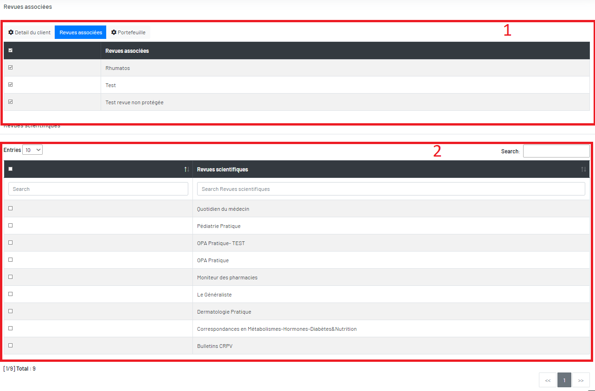

Revues associées du client
Vous pouvez sélectionner ou désélectionner des revues. Puis cliquez sur le bouton « Save » pour le sauvegarder.

Le bloc 1 est les revues déjà associées au client.
Le bloc 2 est les revues désassociées au client. Vous pouvez le sélectionner et désélectionner et puis cliquer le bouton en bas « Sauvegarder » pour enregistrer la modification.